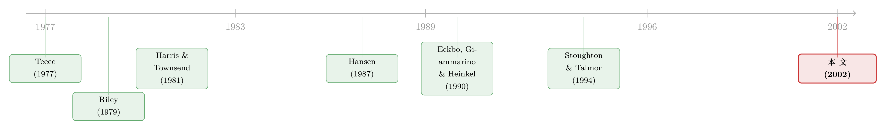

持股比例被法律按住，他便用『投资额』说话
本文读的是 Noe、Rebello 与 Shrikhande (2002, Review of Financial Studies)：当东道国用法律限制跨国公司在合资企业里的持股比例时，这条「股权限制」到底有没有用、会逼出过度投资还是投资不足，完全取决于两件事——谁握有谈判筹码，谁握有私人信息。当谈判优势在跨国公司一侧，股权限制会反过来抬高本地企业的利润、并扭曲投资；可一旦谈判优势在本地企业手里，同一条限制就形同虚设。
1 一个绕不开的悖论
先看一组事实。1996 到 1998 短短三年里，全世界成立了两万多家合作型企业（cooperative venture）；到 1999 年，这类安排已经占到美国最大 1000 家公司收入的至少 20%。跨国公司与本地企业合资，是外商直接投资 (foreign direct investment, FDI) 最常见的形态。
可奇怪的是，这些合资企业里有一大批，外资方只是少数股东。
为什么？一部分答案写在法律里。印度、印尼、肯尼亚、韩国、尼日利亚、菲律宾、泰国……一长串国家都立法限制外资在合资企业里的持股比例，很多时候直接把外资按死在「少数股权」的位置上。老挝的投资法甚至规定，本地企业在合资企业里的出资不得超过 30%。
于是一个自然的悖论浮上来：如果外资只能当小股东，赚不到大头，他们为什么还是成群结队地进来？反过来，本地政府煞费苦心立的这条「股权限制」，究竟保护了谁、又扭曲了什么？
更微妙的是——这类「持股比例上限」这种东西，直觉上像一道税：限制外资多拿，等于把价值切一块留给本地。税会抑制投资，这点经济学家早就懂了。可本文作者偏偏要避开这条「税」的老路，他们想问的是一个更隐蔽的问题：当股权比例本身是一种「信号」的时候，限制它会发生什么？
这就是这篇论文真正的题眼。把它讲透，整篇文章就立住了。
2 把合资企业拆成一个四元组
要理解「股权是一种信号」，得先看清楚作者怎么把一桩合资生意抽象成数学。
设想一家跨国公司（multinational）要和一家本地企业（domestic firm）合资。两边都是风险中性，无风险利率为零。期初投入 \(I\)，期末实现一笔随机现金流 \(\tilde{X}\)。在期初、定结构之前，双方会收到一个关于前景的噪声信号 \(t\)，取值 \(G\)（好）或 \(B\)（坏），收到 \(G\) 的无条件概率为 \(\pi\)。
现金流只有两种结果，\(\{L, H\}\)，且 \(0 < L < H\)。拿到高现金流 \(H\) 的概率是 \(P_t(I)\)，拿到低现金流 \(L\) 的概率是 \(1 - P_t(I)\)。这里 \(P_t(\cdot)\) 关于投资 \(I\) 单调递增且严格凹——投得越多，成功概率越高，但边际递减。
关键的一条结构假设是单交叉性质 (single-crossing property)，它把「好前景意味着更高的投资边际回报」这件事形式化了：
$$ \frac{D_I P_G(I)}{P_G(I)} > \frac{D_I P_B(I)}{P_B(I)}, \quad \text{for all } I \in [I_{\min}, I_{\max}]. $$
直觉上：在好状态 \(G\) 下，多投一块钱带来的成功概率提升，相对而言比坏状态 \(B\) 下更大。这正是后面所有信号传递得以成立的「地基」——它保证了好类型和坏类型在「投资—股权」平面上的无差异曲线最多只相交一次（这一假设的源头是经典的信号理论，见 Riley (1979)）。
接下来是合同。一桩合资结构必须说清两件事：期初投资谁出、期末现金流谁拿。
投资这边，定义出资政策为有序对 \((I, \eta)\)，其中 \(\eta \in [0, \bar{\eta}]\) 是本地企业承担的出资比例（本地企业受资本约束，所以有上限 \(\bar{\eta}\)）。
现金流这边，设 \(s(x)\) 为现金流为 \(x\) 时付给跨国公司的金额，有限责任要求 \(0 \le s(x) \le x\)。由于只有两点支撑 \(\{L, H\}\)，作者用一个漂亮的「斜率—截距」刻画把合同压成两个数：
$$ \alpha \equiv \frac{s(H) - s(L)}{H - L}, \qquad \rho \equiv \frac{s(L)}{L}. $$
\(\rho\) 是跨国公司从「低现金流」里分到的比例，可以理解成债权性质的索取；\(\alpha\) 是合同对现金流的斜率，也就是跨国公司在高现金流增量上的分成——这正是它的股权 (equity) 持有比例。\(\alpha\) 越高，跨国公司越能拿走项目向上的收益。
把这些拼起来，一桩合资结构就是一个四元组 \((I, \eta, \rho, \alpha)\)。跨国公司的收益函数是：
本地企业的收益则是剩下的部分：
$$ V_t(S) \equiv L + (H-L)P_t(I) - I - U_t(S) = (1-\rho)L + (1-\alpha)(H-L)P_t(I) - \eta I. $$
而股权参与限制 (equity participation constraint) 就被写成一行极简的约束：
$$ \alpha \le \zeta, \quad \text{for some } \zeta \in [0,1]. $$
\(\zeta\) 越小，限制越紧。法律不让外资拿走太多上行收益，本质上就是给斜率 \(\alpha\) 戴了个上限。
3 把「税」剥掉，只留下「信号」
到这里，作者做了一个非常关键、也容易被读者一眼滑过去的处理。
前面说过，股权限制可能以两种方式起作用：一是限制合同形状（不许把太多上行收益让给外资），二是直接给本地企业切出一块价值——当本地企业缺钱、无法靠多出资来「买回」这块价值时，限制就变成了一道实打实的税。
作者想专心研究第一种——激励效应，于是用一条「合法最低条件 (legal minimum condition)」把第二种（价值再分配的「税」效应）从模型里剔除掉：
$$ (1-\zeta)(H-L)P_G(I) < V_{\min}, \quad I \in [I_{\min}, I_{\max}]. $$
这条不等式保证：即便股权限制存在，仍然存在某个合同能让本地企业拿到低于其保留价值 \(V_{\min}\) 的回报。换句话说，限制没有强行替本地企业「保底发租」，它只动合同的形状，不动价值的分配。
这个处理是全文逻辑能成立的前提。它等于说：我们故意把那条「显然会抑制投资」的税收渠道关掉，单看股权限制作为「信号工具」被砍掉之后，会发生什么。 凡是后面出现的投资扭曲，都不能赖在「税」头上——这是作者为干净识别机制做的一次「理论上的控制变量」。
作为对照，作者先解了对称信息下的情形。这时科斯定理 (Coase theorem) 成立：双方都只想把总价值做大，投资水平由一阶条件 \(D_I P_t(I)(H-L) = 1\) 决定，记为帕累托最优投资 \(I_t^{PO}\)；至于用股权还是债权来分这块饼、谁分多少，全看谈判力，与投资水平无关。股权限制在这里毫无影响。
于是悬念被吊到了最高点：既然没有信息不对称时股权限制什么也改变不了，那它一旦「有用」，就必然是因为信息不对称。问题来了——信息站在谁那边，谈判力又站在谁那边？
4 核心：股权是一句「我看好它」的话
现在把那个核心想法摆到台面上。
在信息不对称的世界里，持有股权（即斜率 \(\alpha\)）本身就是一个信号。道理和并购里「用股票还是用现金收购」一模一样：掌握正面私人信息的一方，愿意接受一份「现金流挂钩」的支付——因为它知道项目会好，挂钩的支付对它最划算。把这层挂钩做到极致，就是全股权。
这正是本文最关键的一步。我们顺着 2×2 走一遍，你会看到同一个「股权即信号」的逻辑，被不同的权力—信息配置揉出四张截然不同的脸。
第一种：跨国公司既有谈判力，又有信息优势。 此时本地企业是可被替换的「劳务承包商」，竞争让跨国公司攫取了几乎全部租金。跨国公司唯一的难题，是让自己不得不让给本地企业的那一小块合同被高估值——它得说服本地企业「项目前景大好」。怎么说？接受全股权。可一旦法律按住了 \(\alpha\)，全股权这条最省的信号路被封死，跨国公司只好退而求其次，掏出更贵的信号：过度投资 (overinvestment)。注意，这时限制本地企业出资比例 \(\eta\) 毫无作用——投资本身正是跨国公司想用的那个信号。
第二种：跨国公司有谈判力，但信息优势在本地企业手里。 本地企业有动机「狼来了」——明明前景好，却谎称前景差，好让跨国公司相信「我得多分一块才肯干」。为了打掉这种谎报，跨国公司的最优反应是：一旦收到「坏前景」的报告，就给一份严厉限制投资、把本地出资压到最低、并剥夺其上行收益的合同。 而要剥夺本地企业的上行收益，跨国公司必须把自己的股权 \(\alpha\) 顶到最大——于是股权限制再次绑定，限制越紧，投资扭曲越严重，结果是投资不足 (underinvestment)。
第三种：本地企业既有谈判力，又有信息优势。 这是第一种的镜像：本地企业想拿全股权去抬高跨国公司对项目的估值，而「限制外资股权」对它根本不构成障碍。但有时单靠本地全股权还不足以传递好消息，就需要过度投资来补。此时真正咬人的，反而是对本地企业出资比例的限制——它既伤本地企业，又便宜了跨国公司。
第四种：本地企业有谈判力，但信息优势在跨国公司一侧。 这是第二种的镜像：出现投资不足，跨国公司在报告坏前景时拿走 100% 股权；限制外资股权毫无作用，而限制本地出资份额则既伤本地、又利外资。
把四张脸合起来看，论文摘要里那句话就水落石出了：
当谈判优势在跨国公司一侧时，股权限制会抬高本地企业利润、并诱发次优投资——信息优势也在外资一侧时是过度投资，信息优势在本地一侧时是投资不足；而当谈判优势在本地企业一侧时，股权限制不影响投资水平。
这就是全文的「一个核心」：股权比例是私人信息的载体，限制它，等于逼着掌握信息的一方改用「投资额」这种更昂贵的方式说话。 至于这句话被「扭」成过度还是不足，由信息优势的方向决定；至于股权限制到底有没有牙齿，由谈判力的归属决定。
一个容易混淆的点：很多人以为「限制外资股权」必然抑制投资。本文恰恰告诉你未必——它可能引发过度投资。因为当外资急于用全股权来「自证清白」却被法律拦住时，它会用「投得更多」来替代那个被没收的信号。扭曲的方向，不取决于限制的松紧，而取决于谁在向谁证明什么。
这个「现金流挂钩支付＝好类型的偏好」的直觉，与收购中「用股票而非现金作为交易媒介」的逻辑同根同源（关于战略投资者如何把自己的信息与协同价值揉进股权安排，可参见《协同效应，是嫁妆还是软肋？——一个关于战略投资者的理论》；关于「提前出让一笔股权」如何反过来服务于控制权博弈，亦可对照《一笔提前卖出的股权，是为了让你将来「抢着加价」》）。
5 几条能落到实证的预言
纯理论也能长出可检验的含义，这是本文让人欣赏的地方。作者顺势推出了一串关于「政治经济」的预言：
- 政治争议的温度，取决于谈判力的归属。 当跨国公司握有谈判优势时，关于股权限制的政治辩论会很「热」——因为此时限制最有牙齿。更微妙的是，投资扭曲会让「就业」和「本地伙伴利润」朝相反方向移动，于是限制天然带有争议性。
- 本地企业有私人信息却谈判力弱的国家，争议最激烈。 因为这正对应「投资不足」、本地企业与本地工人利益相冲突的情形；反过来，若信息优势也在外资一侧，本地企业和工人都能从限制中获益，限制会获得「一致拥护」。
- 对本地出资的限制，只在本地企业有谈判筹码时才显著。 因此在「本地企业对关键投入握有垄断力」的合资里，本地出资会与其可动用资本成正比；否则本地几乎不参与出资。
- 股权限制会放大投资规模的波动，进而加剧宏观波动。 援引 Holmstrom 与 Weiss (1985)，作者预言：那些既有股权限制、本地资本家又缺乏谈判力的国家，会经历更剧烈的宏观经济波动。
6 文献脉络
把这条线捋一捋，你会看到本文坐落在三股研究的交汇处。
第一股是合资企业「为什么形成」的文献：Teece (1977) 讲跨国公司的技术转移，Porter 与 Fuller (1986)、Ghemawat 与 Spence (1988)、Kogut (1988) 把它归因于禀赋异质与生产互补。但正如 Yoffie (1993) 所言，经济学家对「如何最优地构造合资企业」兴趣寥寥——本文要填的正是这个缺口。
第二股是「谈判力如何塑造合资结构」的实证与理论：Fagre 与 Wells (1982)、Contractor (1990) 用数据记录了「外资持股比例随其谈判力上升」，本文结果与之一致；Darrough 与 Stoughton (1989)、Stoughton 与 Talmor (1994) 研究谈判力对合资企业转移定价的影响。本文对后者的推进很关键：在他们的设定里，私人信息一旦披露便不再有不确定性，最优机制只需规定「转移支付」；而本文引入了剩余不确定性 (residual uncertainty)——私人信息并不能消除未来现金流的所有不确定性——再叠加有限责任，于是最优机制必须是状态依存的合同，而非简单的转移支付。
第三股，也是本文方法论的灵魂，是「信息不对称下的交易媒介」文献：Hansen (1987)、Fishman (1989)、Eckbo、Giammarino 与 Heinkel (1990) 证明，当目标公司握有私人信息时，简单的现金对价并非最优，最优的是「公司价值挂钩」的支付——这可以通过换股收购实现。本文把这套直觉平移到了合资场景：报告正面私人信息的一方，理应拿到一份价值挂钩的支付（即全股权）。再往上追，资源配置与有限责任的根，则可上溯到 Harris 与 Townsend (1981) 与 Innes (1990)；信号博弈的均衡精炼，则建立在 Riley (1979) 之上。

值得一提的是，本文与「外资—东道国—资本管制」这条更宏观的脉络也能对话（关于跨国公司如何在「拦住资本」与「招来外资」之间钻出一笔账，可参见《想拦住资本，又想招来外资——跨国公司如何把这道矛盾「钻」成了一笔账》；关于跨境上市如何替小股东提供「不会被偷」的承诺，亦可对照《把股票挂到纽约，是为了给小股东一份『不会被偷』的承诺》）。
7 评论与延伸（Q&A + 研究方向）
(a) 几个可能的疑问
Q：这条「股权限制可能引发过度投资」的结论，会不会只是模型设定的产物？
它确实依赖单交叉性质与有限责任这两块地基，但逻辑是稳健的：只要「投资额」能像「股权斜率」一样承担信号功能（即投资的边际回报在好状态下更高），那么砍掉股权这个信号，掌握好消息的一方就会转用投资额来自证，从而偏离帕累托最优。设定提供的是干净的可解性，机制本身并不脆弱。
Q：作者为什么要费力气剔除「税」效应？直接保留不是更贴近现实吗？
因为「税会抑制投资」是已经被充分理解的旧结论，混在一起反而会掩盖新机制。「合法最低条件」相当于一次理论上的控制变量——把熟知的渠道关掉，才能让股权限制作为信号工具被砍掉时的激励效应单独显形。这是为识别机制服务，而非为贴近现实。
Q：为什么谈判力归属能决定股权限制「有没有牙齿」？
关键在于股权限制约束的是斜率 \(\alpha\) 的上限——它只挡得住「想多拿上行收益」的那一方。当跨国公司有谈判力时，是它在用全股权（高 \(\alpha\)）做信号或剥夺对方上行，限制正好咬在它身上；而当本地企业有谈判力时，想拿全股权的是本地企业，「限制外资股权」根本拦不到它，于是形同虚设。
Q：这和并购里「现金 vs 换股」的信号到底是不是同一回事？
是同构的。两者都是「掌握正面私人信息的一方偏好价值挂钩支付」。差别在于本文叠加了剩余不确定性与有限责任：私人信息不能消除全部不确定性，于是最优合同必须状态依存，而不能退化成一次性的转移支付——这正是本文相对 Darrough-Stoughton 一系的推进所在。
Q：模型预言「股权限制国家宏观波动更大」，这可信吗？
这是借 Holmstrom-Weiss (1985) 的「投资规模敏感性会放大宏观波动」推出的间接含义，逻辑链条完整，但经验上尚未在本文中检验——它是一条预言，不是一项结果。把它当作有待验证的假说，而非已成立的事实，更妥当。
Q：本文是纯理论，那它的「数据」在哪里？
本文没有实证样本，全部结论来自模型推导（命题证明见附录）。它与数据的接口，是第 4 节那一串可检验的政治经济预言，以及与 Fagre-Wells (1982)、Contractor (1990) 既有证据的「方向一致」。严格说，它提供的是待检验的结构性假说。
(b) 几个可能的研究问题与提案
1. 用 FDI 微观数据检验「过度/投资不足」的方向预言。 - 【经济故事】本文给出一个干净的 2×2：外资谈判力 × 信息优势，预言投资扭曲的符号。若能按行业刻画「谁有信息、谁有谈判力」，就能直接检验过度投资是否出现在「外资双优」的行业、投资不足是否出现在「本地有信息、外资有谈判力」的行业。 - 【可行性】中。需要 FDI 项目层面的投资额、外资持股比例，以及行业层面的谈判力代理（如本地投入垄断度）与信息分布代理（如技术 vs 本地市场知识）。识别难点在于「信息优势」难以直接观测，需借助行业特征构造代理变量，内生性需谨慎处理。
2. 把「股权限制即信号税」搬到公司债/信用市场。 - 【经济故事】本文的内核是「被限制的索取权斜率会扭曲实际决策」。在信用市场里，契约条款（covenants）对债权人上行/下行索取权的限制，同样可能逼迫发行人用「投资扭曲」替代「合同信号」。外资债权人受限的情形尤其值得看。 - 【可行性】中。可用公司债条款数据库 + 发行人投资数据。识别上可利用监管对外资债权人索取权的差异化限制作为外生变化，但需要找到足够干净的政策断点。
3. 外资持股上限放松作为自然实验，识别投资扭曲的反向变化。 - 【经济故事】若某国在某年放松了外资持股上限（\(\zeta\) 上调），本文预言：在「外资谈判力强」的合资里，投资扭曲应当缩小、本地企业利润应当下降。这正好是一个可做的事件研究/双重差分。 - 【可行性】高。这类管制放松在新兴市场有明确时点（Contractor (1990) 即记录了 1980 年代的自由化），可构造处理组（受限行业）与对照组（不受限行业），用双重差分 (difference-in-differences, DiD) 识别投资与利润的变化。数据可得性较好，是最 doable 的一个方向。
4. 把「剩余不确定性」维度做成连续变量，检验合同状态依存程度。 - 【经济故事】本文的理论分界点是「私人信息能否消除全部不确定性」。当剩余不确定性越大，最优合同越该状态依存（而非固定转移支付）。这可以做成一个跨行业的横截面预测。 - 【可行性】低到中。难点在于「剩余不确定性」的度量——需要行业层面的现金流波动率与信息精度的联合代理，构造不易，结论也容易受测量误差影响，诚实地说不太好做干净。
8 我的判断
这篇论文的贡献，在于它把一个看似纯属「监管/政治」的现象——外资持股限制——重新解释成一个信号博弈的均衡产物，并用一个极简的 2×2 把「权力」与「信息」两条轴分得干干净净。最漂亮的一点，是它预测了反直觉的过度投资：人们本能地以为「限制外资股权」会抑制投资，作者却证明，当全股权这条信号路被堵死时，掌握好消息的一方会用「投得更多」来替代，于是反而过度。把摘要那一句「过度投资发生在外资信息优势被谈判优势强化时，投资不足发生在本地企业有信息优势时」读懂，整篇文章的张力就立住了。
对识别的担忧，主要有三点。其一，全文是纯理论，所有「可检验含义」都还停在预言阶段，与既有证据只有「方向一致」级别的对话，缺少自己的实证检验。其二，机制高度依赖单交叉性质与剩余不确定性这两块设定——尤其「信息优势的方向」在现实中极难直接观测，任何想检验它的人都得先解决一个度量难题。其三，「合法最低条件」虽然让机制干净，但也意味着模型刻意回避了现实中股权限制最常见的「价值再分配（税）」效应；真实世界里两种效应同时存在，纯激励渠道能解释多大份额，仍是开放问题。
后续我最想看到的，是有人拿一次外资持股上限放松的自然实验，去检验本文方向预言里最干净的那一条：在外资谈判力强的合资中，限制放松后投资扭曲是否真的收敛、本地企业利润是否真的下降。这是一个 doable 的 DiD，也是把这篇 24 年前的理论真正「钉」到数据上的最短路径。
参考文献
- Contractor, F. (1990). Ownership Patterns of U.S. Joint Ventures Abroad and the Liberalization of Foreign Government Regulations in the 1980s: Evidence from the Benchmark Surveys. Journal of International Business Studies 21(1), 55–73.
- Darrough, M., and N. Stoughton (1989). A Bargaining Approach to Profit Sharing in Joint Ventures. Journal of Business 62(2), 237–270.
- Eckbo, E., R. Giammarino, and R. Heinkel (1990). Asymmetric Information and the Medium of Exchange in Takeovers: Theory and Tests. Review of Financial Studies 3(4), 651–675.
- Fagre, N., and L. Wells (1982). Bargaining Power of Multinationals and Host Government. Journal of International Business Studies 13, 9–23.
- Fishman, M. (1989). Preemptive Bidding and the Role of the Medium of Exchange in Acquisitions. Journal of Finance 44(1), 41–57.
- Hansen, R. (1987). A Theory for the Choice of Exchange Medium in Mergers and Acquisitions. Journal of Business 60(1), 75–95.
- Harris, M., and R. Townsend (1981). Resource Allocation Under Asymmetric Information. Econometrica 49(1), 33–64.
- Holmstrom, B., and L. Weiss (1985). Managerial Incentives, Investment, and Aggregate Implications: Scale Effects. Review of Economic Studies 52(3), 403–426.
- Innes, R. (1990). Limited Liability and Incentive Contracting with Ex-ante Action Choices. Journal of Economic Theory 52(1), 45–67.
- Kogut, B. (1988). Joint Ventures: Theoretical and Empirical Perspectives. Strategic Management Journal 9(4), 319–332.
- Riley, J. (1979). Informational Equilibrium. Econometrica 47(2), 331–360.
- Stoughton, N., and E. Talmor (1994). A Mechanism Design Approach to Transfer Pricing by the Multinational Firm. European Economic Review 38(1), 143–170.
- Teece, D. (1977). Technology Transfer by Multinational Firms. Economic Journal 87, 242–261.